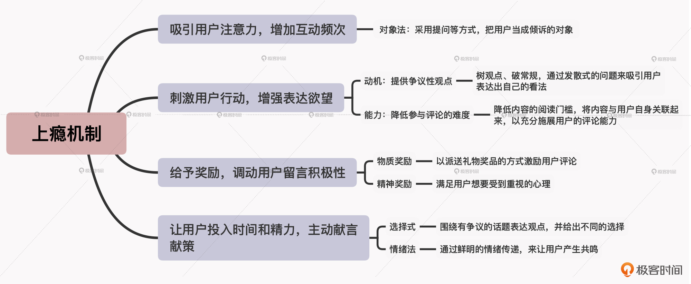

- 00 开篇词 短视频时代下，怎么把握好变现风口？.md.html
- 01 爆款短视频的底层逻辑：用心拍的短视频为啥没人看？.md.html
- 02 爆款短视频的底层逻辑：如何轻松打造自我特色？.md.html
- 03 精益创业法：如何快速跨过从0到1这道坎？.md.html
- 04 SWOT法：这么明显的个人优势你为啥就是看不到？.md.html
- 05 效用函数法：如何用量化的方式进行高效创作？.md.html
- 06 二次创新实验法：如何打造个人的差异化定位？.md.html
- 07 平台定位：如何选择最适合自己的创作平台？.md.html
- 08 如何快速找到各大短视频平台的正确切入点？.md.html
- 09 选题（上）：如何利用思考清单找到合适选题？.md.html
- 10 选题（下）：如何为不同的内容定制合适选题？.md.html
- 11 优劣分析法：如何快速筛选适合创作的视频素材？.md.html
- 12 标题（上）：如何利用微创新巧妙找到爆款标题？.md.html
- 13 标题（下）：如何用对号入座的方式抓住标题亮点？.md.html
- 14 视频封面（上）：如何快速抓住用户注意力？.md.html
- 15 视频封面（下）：如何传递最有价值的信息？.md.html
- 16 视频剪辑：如何轻松掌握视频化剪辑的三大公式？.md.html
- 17 效果反馈法：剪辑很容易，为什么你却一直学不会？.md.html
- 18 剪辑对比（上）：如何避开常见的短视频剪辑陷阱？.md.html
- 19 剪辑对比（下）：如何利用剪辑技巧提升视频质量？.md.html
- 20 拉片法：用电影创作的方式学习爆款短视频运营技巧.md.html
- 21 用户留存率：为什么粉丝很多但忠实拥趸却很少？.md.html
- 22 点赞率（上）：如何有效提升短视频的点赞量？.md.html
- 23 点赞率（下）：三种方法轻松提升用户对内容的认可度.md.html
- 24 上瘾机制：为什么视频观看量很高却没人留言？.md.html
- 25 避坑指南：为什么很多短视频账号中途做不下去了？.md.html
- 26 如何找到适合自己的短视频变现模式？.md.html
- 27 多元化变现：如何明确不同创作阶段的变现任务？.md.html
- 28 多内容变现：不同内容的主打变现模式是什么？.md.html
- 结束语 一切成大事者，都是终身学习者.md.html
- 捐赠
24 上瘾机制：为什么视频观看量很高却没人留言？
你好，我是周维。前面两节课，我们了解了如何有效提升内容的点赞率，以此提升作品成为爆款的几率。实际上，在短视频创作中，内容的评论量也是平台的算法机制判定作品优劣和给予曝光量的重要参考维度。
而且对于创作者来说，拥有更多的评论留言也是百利无一害的。一方面创作者可以通过筛选作品的评论来为后续的创作寻找合适的选题；另一方面也可以通过留言回复来增加互动，提升与用户之间的信任度，从而转化更多用户成为自己的忠实粉丝，提升个人账号的商业价值。
不过，内容的评论量也不是说涨就涨的，很多创作者在运营内容的过程中，可能都会面临过以下这些问题：
- 一期内容发布后整体播放量还不错，但没有一个人留言。而且这种情况持续了很长时间，导致自己的粉丝量也增长缓慢。
- 每期发布的内容下面也有零散的人来留言，但是基本都不是围绕内容主题展开的讨论，而像是一些机器回复，比如“可以”“来过”“哈哈”等。
- 在每期视频内容的最后都设置了问题，想要来引导用户针对内容主题进行评论，不过收效甚微。
那有没有什么办法可以改善评论量少的难题呢？当然是有的，这就是今天我要给你介绍的“上瘾机制”。
在如今的互联网时代，可以说所有的产品运营的最终目标，就是能够占据用户的心智，让其“上瘾”，这样产品才能够持续走红，获得长久的生命力。
所以，我们在创作短视频的时候，就可以站在“用户对一款产品上瘾”的角度，来打造视频内容，以吸引更多的用户对内容进行评论，并让其养成评论的习惯，从而产生“上瘾”的心理，以此不断提高作品的留言量。
那么具体要怎么做呢？下面，我就来给你详细介绍一下四种能够让用户养成评论习惯的方法。
吸引用户注意力，增加互动频次
第一种方法是吸引用户的注意力，并增加与用户互动的频次。实际上，从产品的角度来说，这种方法的目的就是要让用户对产品（即内容）产生兴趣，促使用户想要来主动体验产品的功能（即评论留言）。
那么如何才能有效吸引用户的注意力呢？我来给你分享一个创作诀窍：对象法，也就是把用户当成自己倾诉的对象，采用提问、采访等问话方式，让用户能够代入到特定的场景、情境当中。这样用户就会针对具体的问题表达自己的看法，从而即可增加互动的频率。
比如说，喜剧演员郭冬临做了一期关于“方便面有时也不方便”的视频内容，视频一开始就提了一串儿问题：你们吃过方便面吗？你们知道方便面最大的缺陷是什么吗？就是一包方便面不够吃，两包方便面吃不完……这条视频的评论量达到了12万之多。
内容虽短，但是因为采用了对象法，创作者将用户当作了说话的对象，这种方式就可以激发用户的倾诉欲望，所以用户就想要在评论区中表达自己的观点或做法。比如说，有人会表示赞同，有人则表示反对，称自己三包都不够；还有人谈到方便面一定要煮，然后再放一个鸡蛋才好吃……
在采用对象法进行创作时，你也可以在结尾处刻意留下与视频内容相关的问题，问问用户是如何看待的。这样的问法，也可以激发用户更多的评论留言，表达自己的看法与观点。不过要注意，在评论区回复用户的留言时，一定不要单纯为了互动而互动，而是要围绕具体的话题输出你独特的观点，这样也可以激发更多的用户表达自己的看法。
刺激用户行动，增强表达欲望
增加评论留言的第二种方法，就是刺激用户行动，增强用户的表达欲望。
在做产品时，要想改变用户的消费行为，我们首先会从两个因素着手，一个是动机（Motivation），即要让用户有足够的愿望使用产品；另一个是能力（Ability），即要让用户轻松驾驭产品，降低使用门槛。
那么在短视频创作中，我们同样也可以通过动机和能力这两个关键因素来打造视频内容。动机就是用争议性的观点来刺激用户产生表达的欲望，能力则是降低用户评论的难度，让每个人都能参与到话题的讨论中，从而激发更多的交流和互动。下面我就来具体给你介绍一下。
动机：提供争议性观点
创作者可以对用户认知中存在的信息偏差进行重新解读，也可以旗帜鲜明地表达自己对于某件事的观点、看法，然后设置具有开放性、争议性的话题引导用户去评论。它的核心就是要树观点、破常规，通过发散式的问题来吸引用户表达出自己的看法。
我给你举个例子。曾经有一款手游风靡一时，就有观点说打游戏可以提高人处理问题的能力，所以，创作者“南方健康”就针对这个观点，以这款游戏为主题，从健康的角度来展开讨论，并以“大脑多任务切换可以锻炼多项任务并行处理的能力”为论据，提出了自己的观点：玩游戏确实可以提高处理问题的能力。
当他把自己的观点亮出来之后，其实就激发了很多用户想要表达的欲望，接着他在评论区中发出追问，顿时就引发了用户一阵对该观点的讨论，有支持这个说法的，也有不赞成这个说法的，其中有这款游戏的拥趸者，也有这款游戏的抵制者。
当然我们要知道，对于有争议性的观点，往往不会有一个标准的“正确答案”，创作者可以站在不同的角度来表达自己的观点。而争议性观点的背后，其实是要让用户围绕问题自觉站队，去坚守自己的看法，越是如此，双方甚至是多方就越会产生激烈的争论，这样一来，作品的评论量自然而然就提升了。
能力：降低参与难度
前面我提到过，能力是降低用户参与评论的难度。所以我们首先要降低内容的阅读门槛，将内容与用户自身关联起来，以此才能充分施展用户的评论能力。
比如说，科技类内容创作者“所长林超”围绕5G的话题创作了一期视频内容，从5G的前生今世到如今的发展进程，再到未来展望都做了详细讲述。但是如果按照这个角度切入，用户评论的门槛会很高。所以，这位创作者把切入内容的角度转换成了“年轻人如何才能抓住5G时代的红利”，并且在内容的最后，提出了一个与用户个人有直接关系的问题：你觉得5G带给你最大的改变是什么？
针对这个开放式的问题，用户在看完视频之后就会根据自己的想象畅所欲言，这就是降低了评论的门槛，可以让用户不用担心说错话而不敢发表评论。
给予奖励，调动用户留言积极性
做产品的人可能都知道，奖励机制是很关键的一种运营手段。这就像你玩游戏一样，通过打怪升级，你能获得好的装备，进而可以从中获得一种即时成功的满足感。
那么在短视频创作中，我们也可以运用类似的奖励机制，来吸引和调动用户进行评论和互动。具体怎么做呢？我认为可以分为物质奖励与精神奖励两种方法。
物质奖励
物质奖励简单易懂，就是通过派送礼物奖品的方式去激励用户评论。
比如说，绘画创作者“小熊猫胖哒”在内容中讲到自己作画的颜料，然后就说“评论区点赞最多的送一盒视频中的同款颜料”，这样就吸引了很多人去积极留言；搞笑类内容创作者“林清挽”同样也采用了物质奖励，他在内容中提到“第888个评论会有神秘礼物”，也激发了很多观看用户去留言评论。
请注意，这里要敲下黑板：当我们采用物质奖励的方式去激发用户评论时，设置的奖品最好是跟创作的内容有关，比如刚才我们提到的绘画创作者送的奖品是颜料，搞笑类创作者送的奖品其实是滑稽小木偶。这样愿意来留言评论的，就都是对内容感兴趣的用户，这样的互动也会提高创作者和用户之间的信任度，而且后期在变现时也更容易让用户接受。
精神奖励
而所谓的精神奖励，就是满足用户想要受到重视的心理。
要知道，很多用户愿意与创作者互动，是基于对于内容的认可，所以他们更加重视在精神方面给自己带来的奖励与回馈。创作者可以根据用户对于自己内容提出的中肯建议、有价值的评论，在视频、直播或评论区中给予点名鸣谢。如此一来，用户感受到自己的建议受到重视了，就会更愿意奉献自己对于内容方面的所思所想。
事实上，很多时候创作者的选题方向来源也是从用户的评论中得来的，很多用户都愿意分享自己的经历、见解与看法，这样的评论也会吸引其他的用户去点赞来表示认可，而这就说明这类的内容是用户喜爱的，我们完全可以拿过来作为下一次创作的选题方向。
让用户投入时间和精力，主动献言献策
不知你平常在打开某一款App的时候，有没有遇到过让你打卡签到的情况，这其实就是从产品设计的角度来让用户主动投入时间和精力，以此增强用户粘性，延长使用时长，从而保持产品的活跃度。
所以创作者在创作内容的时候，也可以根据一定的创作方法让用户愿意投入时间和精力，主动进行评论。那么具体是什么方法呢？下面我来给你详细介绍下。
选择式方法
首先是选择式方法，创作者可以围绕一个有争议的话题去表达自己的观点和看法，给出一定的建议。但它跟前面提到的“提供争议性观点”不一样的是，这里创作者给出的答案是可以让用户选择的，就像硬币的两面，用户可以选择一面作为自己支持的观点。
比如说，有健康类的内容创作者，会围绕“胖瘦是脾虚体质还是脾湿体质”提出自己的观点，认为脾虚的人一定是瘦子，脾湿的人一定是胖子，然后丢出问题，让用户自行选择到底是脾虚还是脾湿。这样，当用户真的用心去做选择时，就是专门付出了自己的时间与精力，通过对号入座的方式阐述自己的观点。
当我们采用选择式方法来提高用户的评论留言数量时，一定要先在内容中表达自己的观点。这种观点肯定有人支持，肯定也会有人不认同，这是正常的事情，我们可以同持有相反观点的用户进行交流对话。
但要注意，在对话的过程中，我们一定要提供有价值的观点输出，这样就会吸引更多的用户信赖自己，整体的留存率相应也会得到提升。
情绪法
然后是情绪法。实际上，用户在观看短视频内容时，会将自己的情感也寄托其中，比如会产生喜悦、愤怒、沮丧等情绪。所以，我们可以围绕这些情绪来设计内容讲述的思路和框架，通过鲜明的情绪传递，来让用户产生共鸣，从而吸引用户积极地留言互动。
我给你举个例子。创作者“贵州都市报”发布了一条“狠心丈夫丢下已孕妻子，还记得婚礼上那些承诺吗？”的短视频内容，首先在标题的文案上，就是以发问的形式来引起用户的观看兴趣，然后在内容讲述中，以讲故事的方式说明了为何丈夫会“抛弃”怀孕的妻子，从而就引发了用户的情绪波动，有人愤怒、有人悲伤，也有人留言诉说自己在婚姻中遭遇的不堪往事。
这样，当用户陷入到情绪中不能自拔时，就愿意花费更多的时间，去表达自己的看法和观点。这里要注意，当我们使用情绪法时，要结合自己的内容定位和人设，不能只是刻意地传递情绪。
小结
这节课我根据“上瘾机制”的原理，给你介绍了四种提升用户评论量的方法，你在创作中可以独立使用，也可以组合使用。这里要注意，你在使用的过程中，要针对每一种方法及时做好反馈测试，这样可以帮助自己更好地理解用户的需求，让彼此建立亲密感，提升信任度。
另外，今天所讲的这四种增加评论留言的方法，最终的目的都是为了建立信任通道，转化忠实粉丝，进而提升个人账号的商业价值。所以在用户留言之后，你一定要有针对性地给予回复，而不是置之不理。要知道，互动永远是有来有往，才能持续、长久，也才能让自己的变现能力越来越强。

思考题
假设现在你要创作一期视频内容，主题是教用户如何快速阅读一本书，请你结合今天学习的内容，思考一下如何才能够提高评论量。
欢迎在留言区分享你的答案，也欢迎你把今天的内容分享给正在学习或者创作短视频的朋友，看看他们的想法是什么。
© 2019 - 2023 Liangliang Lee. Powered by gin and hexo-theme-book.